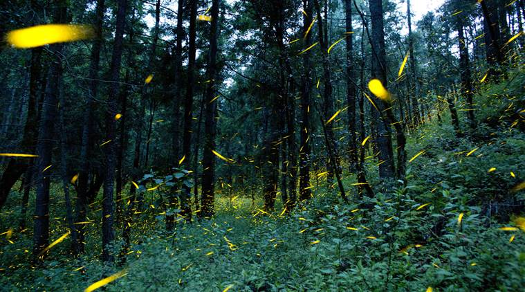
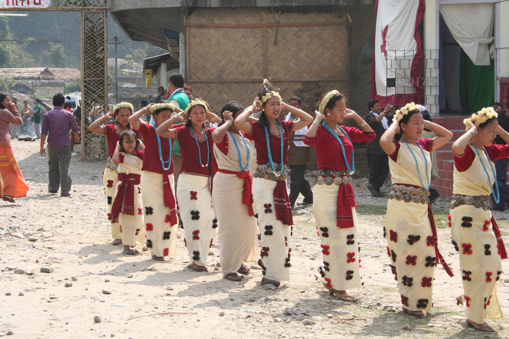

INTRODUCTION
Eco Tourism first came into existence in the early 1980s and since then it has started to develop pretty
well around the world. Eco tourism or ecological tourism is a multi faceted term. Ecology here refers not
only to the environment, or the wildlife and forest reserves, but it also has social connotations to it.
Ecological tourism is "responsible travel to natural areas that conserves the environment and improves the
well-being of local people" (by international eco tourism society). Accordingly, an important aspect of eco
tourism is also safeguarding nature, which locals and tourists both have to ensure.
Eco tourism is a relatively new term and concept and has been acknowledged in India off late only. Himachal
Pradesh is one such beautiful state in India where eco tourism is developing in its pure form. Himachal
Pradesh is undoubtedly blessed with everything that makes it a first choice of eco tourists.
Moreover, the state has also developed many facilities for eco tourist. There are 400 forest bungalows at
vantage points, dedicated nature trails have been framed and trained guides and porters are available too.
ECO Tourism Attractions
The Greens

Nature comes alive in its every possible form here. Green forests spreading over miles of hilly terrains. Oaks, maples, birdcherry, hazelnut, walnuts and many other beautiful trees lend Himachal a beauty that is beyond words. There are 3240 species of plants in the state. National Parks in Himachal Pradesh are a perfect place for eco tourists. Great Himalayan National Park in Kullu is one of the prime protected lands and is a perfect place to enjoy nature at its best. Himalayan Nature Park near Shimla has over 100 hectares of Western Himalayan temperate forests that are rich with floral varieties. Another famous spot in Himachal is Potter's Hill Van Vihar. It covers around 100 hectares of Western Himalayan temperature forest that are rich with floral diversity. These are just few of the many places in Himachal Pradesh where one can enjoy the oneness with nature. Sangla valley and Chamba valley are such other places.
The Wild life

Wildlife in Himachal Pradesh is another big draw in its ecotourism chart. Its different types of
terrain, pleasant climate and vegetation are very suitable for wildlife to sustain, survive and
flourish. Snow leopards, Himalayan brown beer, Ibex, Yak, the beautiful manal bird and Western tragopan,
Musk Deer and many more. Himachal Pradesh has 32 wildlife sanctuaries with 64 species of mammals, 43
reptiles and 516 varieties of aquatic fauna. The facts speak volumes about the richness of state in
terms of its wildlife reserves. Renuka wildlife sanctuary, Churdhar sanctuary, both in Sirmour, Chail
Sanctuary in Solan are some of the more popular names with tourists. Maharana Pratap Sagar is the
state's famous wetland and is angler's delight.
The Tribes

Another crucial link in eco tourism are the local people who help preserve the nature trails.
The tribals in Himachal Pradesh are a major component of eco-tourism. The entire areas of Lahaul,
Spiti and Kinnaur near Ladakh and Tibet were once full of different tribal groups. However, over a
period of time,
the tribal population of the state has decreased since more and more tribals have migrated to other
places and have
risen enough to support separate families. A prominent tribe of Himachal are the Shephards (known as
Gaddis here)
who rear goats and sheep and keep moving with them to higher pastures in summers and lower, more warmer
regions in winters.
Another prominent tribal group is that of Kinnars inhabiting the district of Kinnaur.
Some of them are engaged in horticulture and agriculture. They also rear goat and sheep for wool.
Their marriage customs are very interesting. All the brothers in the family share one wife, however this
tradition is changing slowly.
Like Kinners, there is also another tribal group called Lahule, mainly so since they live in Lahaul
area.
They are an intermixed tribe. They are racially intermixed tribe with Tibetans. Very colourful people in
terms of dresses
and ornaments, their valley comes on the trade route to Ladakh and Sinkrang.